Katakolon, Olimpia
El Santuario de Olimpia, lugar de celebración de
los Juegos Olímpicos. Un destino mítico que hay que visitar. La ciudad
dedica al culto de Zeus.
El asentamiento está habitado desde la Edad del Bronce, siempre
vinculado a un lugar sagrado de peregrinación para ofrendar y solicitar
el favor de las deidades.
Cada cuatro años, desde el 775 a.e.c. hasta el 393, se celebraban en
Olimpia las competiciones deportivas en honor a los dioses. En el mundo
griego estos juegos tenían un significado sagrado.
En el 393 los Juegos fueron prohibidos al considerarlos paganos, tras la
adopción del cristianismo como religión oficial del Imperio.
Desde 342 a.e.c., fue protectorado de Alejandro Magno.
En época romana Olimpia se enriqueció. Tras la muerte de Adriano la
ciudad entró en decadencia y los últimos juegos se celebraron en 393.
Las invasiones bárbaras asolaron el santuario. Posteriormente surgió una
pequeña aldea y el taller de Fidias se convirtió en una basílica
paleocristiana. Dos terremotos acaecidos en 522 y 551 causaron la
destrucción y el abandono del lugar, que fue cubierto por los aluviones
de los ríos Alfeo y Cládeo y deslizamientos de tierra del monte Kronos.
Las excavaciones comenzaron con una expedición francesa en 1829,
continuando las excavaciones los alemanes a partir de 1875. A mediados
del siglo XX, el estadio fue desenterrado.
Actualmente en el yacimiento de Olimpia podemos visitar las ruinas de la
antigua ciudad.
Destaca el Templo de Zeus, el Templo de Hera, el Estadio, la Palestra...
El Museo Arqueológico de Olimpia y El Museo de Juegos Modernos.
El templo de Zeus, con su gigantesca estatua de oro y marfil de Zeus
hecha por Fidias, era considerada una de las Siete Maravillas del Mundo.
En 1989, el yacimiento arqueológico de Olimpia fue declarado Patrimonio
de la Humanidad por la Unesco.
Desembarcamos
en el puerto de Katakolon, salimos de la terminal de cruceros, y nos
dirigimos a la salida a la parada de taxis de Katakolon.
Tarifas oficiales taxi en septiembre de 2023. Trayecto de ida y vuelta,
4 personas y dos horas de espera, 100e. Si desea más tiempo, cada hora
de espera 20e.
También se puede llegar al yacimientoen tren o autobús.
Precio de la entrada al conjunto arqueológico y los museos, 12e.
Nuestro recorrido por el yacimiento:
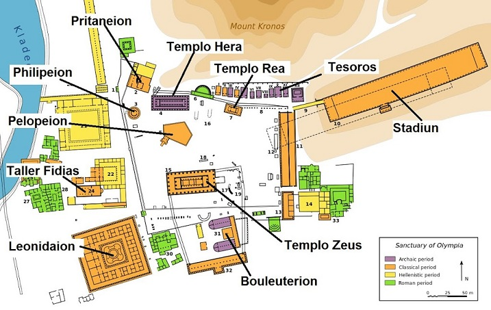
Accedemos al yacimiento y nos encontraremos con los restos que se conservan del Gimnasio que se supone datan del siglo II a.e.c. Espacio abierto para los entrenamientos del que se conservan un conjunto de columnas de la estoa. En el pórtico oriental se hallaba el xystos, una pista cubierta para que los corredores pudieran entrenar, mientras que en el pasillo lateral se encontraba el paradromis, un espacio adicional para poder entrenar. La preparación para los lanzamientos de jabalina y disco se hacía en el extenso espacio al aire libre.
|
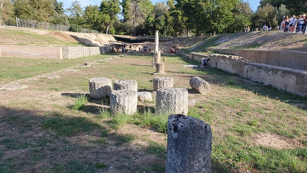 |
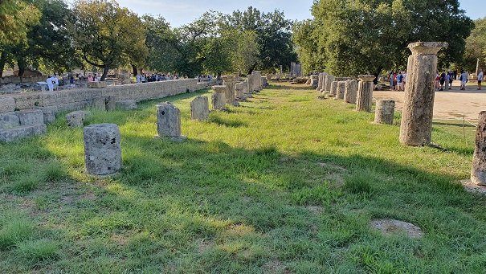 |
En las excavaciones de 2024, los trabajos en el antiguo Gimnasio de Olimpia han sacado a la luz un gran número de estructuras que formaban parte de este recinto y también han confirmado que la estructura necesita protección frente a las posibles inundaciones del cercano río Kladeos. Asimismo se ha anunciado la restauración de algunos edificios de época romana en el yacimiento.
|
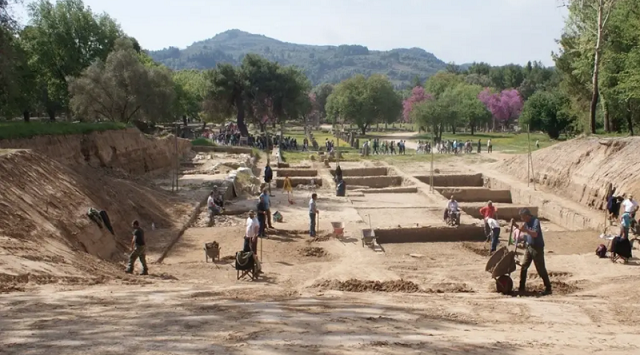 |
Tras él, nos encontraremos con la Palestra del siglo III a.e.c, una edificación cuadrada de 66m de lado rodeada de columnas que se organiza en torno a un gran patio cubierto de arena que se usaba como superficie para lucha olímpica.
|
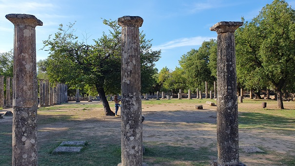 |
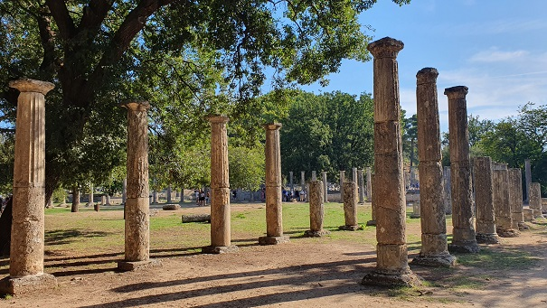 |
Continuamos por los Baños Griegos que datan del siglo V a.e.c. se construyeron unos baños con piscina al aire libre cerca del río Kladeos. En la época romana se reformaron y ampliaron. Se conservan algunos pavimentos con mosaico.
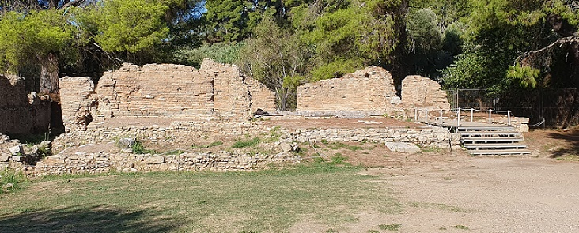
El Taller de
Fidias y la Basílica Paleocristiana.
La iglesia bizantina, uno de los monumentos mejor conservados de
Olimpia, era el taller de Fidias. Bajo los muros de ladrillos romanos
aparecieron los cimientos de piedra labrada del siglo V a.e.c. Estudios
realizados en 1968, confirmaron que se trataba del taller de Fidias, el
prestigioso escultor a quien se le atribuye la decoración del Partenón.
Dentro del recinto del taller, salieron a la luz numeroso utensilios de
diversa índole, cinceles, un yunque pequeño, un pequeño martillo para
embutir o engastar, y herramientas de bronce. Se hallaron innumerables
«desechos de elaboración» del Zeus: fragmentos de marfil, ornamentos de
vidrio… Aquí Fidias esculpió la colosal estatua de Zeus de Olimpia.
Considerada una de las siete maravillas del mundo antiguo, la escultura
fue trasladada en el año 394 a Constantinopla por los otomanos, donde se
dice que fue destruida en el siglo V por un incendio. Solamente se sabe
de ella gracias escritos, descripciones históricas y representación en
monedas.
Al oeste de los talleres, hay vestigios de diversas construcciones de
ladrillo, yacimientos resultantes de una antigua villa romana.
|
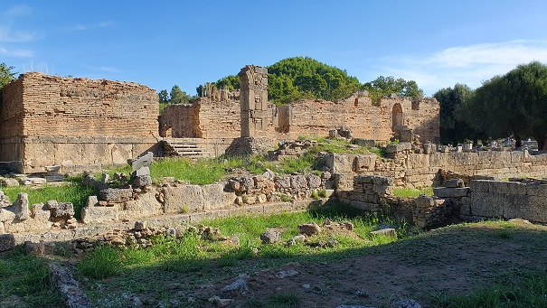 |
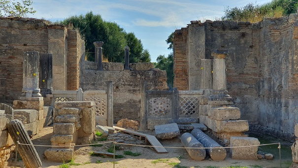 |
El
Leonideo fue construido entre los años 330 y 320 a.e.c. Su nombre
se debe al arquitecto Leónidas de Naxos, artífice de la construcción.
Era una hospedería para los huéspedes distinguidos, acogía a los
visitantes oficiales y a los atletas se alojaban aquí durante la
celebración de los Juegos Olímpicos.
Posteriormente, fue remodelado por el emperador Adriano, y comenzó a ser
utilizado para acoger a las autoridades romanas.
Estaba formado por un peristilo con 138 columnas jónicas en su exterior,
y un patio interior con fuentes ajardinado. Dentro de él, había otra
columnata compuesta por 48 pilares de orden corintio.
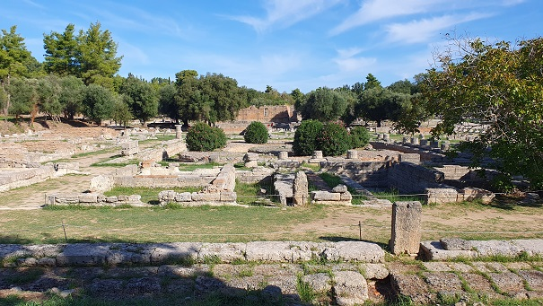
El
Buleuterio y Stoa Sur de Olimpia data del siglo VI o VII
a.e.c. Se hallaba en la zona sur del bosque sagrado del santuario de
Olimpia, próximo al Templo de Zeus Olímpico, aunque separado de él por
los límites del recinto del Altis
Alojamiento, sala de sesiones, reuniones de la boulé, el Senado eleo. A
este Senado o Consejo se le atribuía la facultad de oír y resolver las
denuncias presentadas contra los jueces y atletas por irregularidades
cometidas en el desarrollo de los juegos olímpicos, así como cualquier
otro tipo de reclamación relacionada con los mismos.
Además en el Buleuterio se guardaban diversos materiales y utensilios
deportivos, y los archivos y registros donde constaban los resultados de
las competiciones….En época romana se reformó y amplió.
|
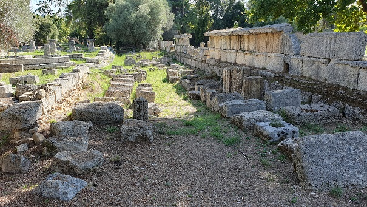 |
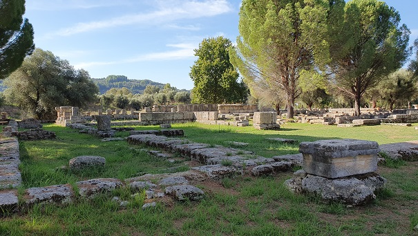 |
Las
Leonidaion Thermae
datan de los siglos III al VI. Se conservan unas termas pequeñas, con
sus mosaicos y el sistema de calefacción de las paredes.
En el siglo V-VI el edificio se convirtió en una fábrica de vinos y se
utilizó un horno para la fabricación de vidrio.
Los edicifios del Sur, son una gran complejo de edificios de la época
imperial. Datan del siglo I-III.
Consistía en un patio central con peristylo y una piscina al aire libre,
tres grandes salas y unas salas auxiliares más pequeñas. Los nichos de
la fachada monumental estaban adornados con estatuas. Era un lugar de
encuentro y entrenamiento para los atletas.
|
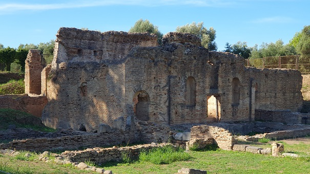 |
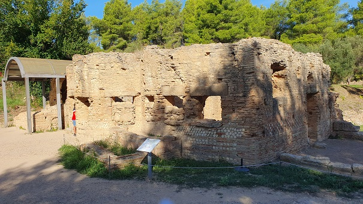 |
El Templo de
Zeus está ubicado en el centro de los jardines sagrados, Altis,
están los restos del templo más importante de todos los que se erigieron
en el santuario de Olimpia, consagrado a Zeus Olímpico. Templo dórico
construido, con piedra caliza y mármol, entre los años 470 y 456 a.e.c.,
obra del arquitecto Libón.
El templo, de casi 27 metros de ancho por 64 de largo, es del tipo
llamado hexástilo.
Estuvo espléndidamente ornamentado. Algunas de sus metopas y frisos, se
encuentra expuestas en el Museo Arqueológico de Olimpia.
Desde el borde del techo se proyectaron 102 caños de agua o gárgolas en
forma de cabezas de león, de las cuales aún se conservan 39 de ellas.
Entre las joyas escultóricas destacaba la colosal estatua de Zeus
esculpida en oro y marfil tallada por Fidias, posiblemente la obra
artística más famosa de Grecia.
 |
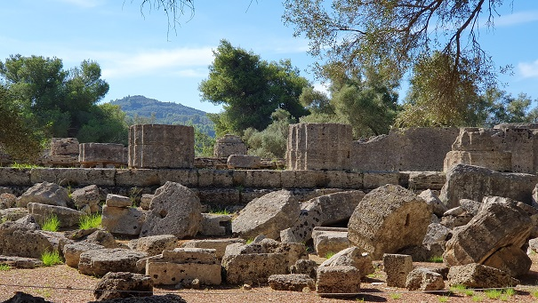 |
La Base de la Victoria de Paeonios. Sobre esta base estaba la estatua de la Victoria alada, hecha por el famoso escultor Paeonios. La base tiene 9 m de altura, por lo que la altura combinada de la estatua y la base era de 12 m. En la parte delantera había una inscripción votiva ahora expuesta con la estatua de la Victoria en el Museo de Olimpia, informando sobre la victoria triunfal de los Messianos y Naupaccianos, los donantes de la estatua al Santuario, sobre los espartanos en 421 a.e.c. En la parte inferior de la base una inscripción posterior fue grabada por los mesienianos alrededor de 135 a.e.c.
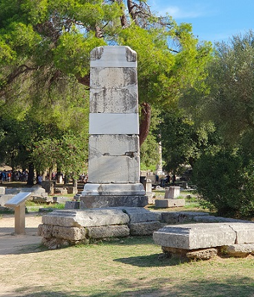
La Villa de
Nerón. Para hacer coincidir su estancia en Olimpia con los juegos
Olímpicos, Nerón ordenó adelantarlos dos años, celebrándose la 211
Olimpiada en el año 67 en lugar del 69.
Hizo demoler edificaciones griegas anteriores para construir su villa
sobre el santuario de Hestia, así como otros edificios de la época
clásica.
Villa con un patio de peristylo, numerosas habitaciones, jardines,
termas, y el llamado "Octágono". Los mosaicos y los techos de las termas
están bien conservados.
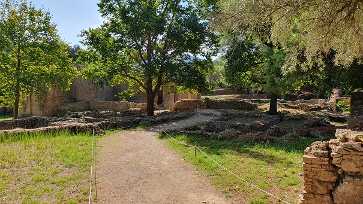
El Pórtico del Eco
fue construido hacia el 350 a.e.c. Sus dimensiones eran 96,50 m de
longitud y 12,50 m de fondo. La fachada abierta que daba al Altis se
componía de 44 columnas dóricas. Una segunda columnata interior de
estilo jónico, sostenía el techo abovedado.
Edificio famoso por su acústica, donde el sonido se repetía siete veces.
Consistía en una columnata dórica exterior. También era conocido como "Poikile"
(Pórtico pintado) debido a su decoración interior de frescos.
Bajo el mandato de Adriano se realizaron diversas reformas y
reparaciones en el edificio. Fue desmantelado en el año 267, para
utilizar sus materiales en la construcción del muro defensivo contra la
invasión de los hérulos.
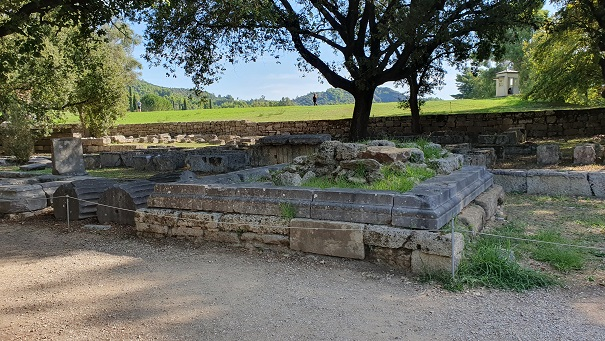
El Monumento de Ptolomeo II y Arsínoe. Calícrates dedicó en Olimpia un monumento a Zeus Olímpico en honor de los reyes Ptolomeo II y Arsínoe II, cuyas estatuas de bronce estaban erigidas sobre sendas columnas, de unos 12-13 m de altura, al extremo de una base de 20 m.
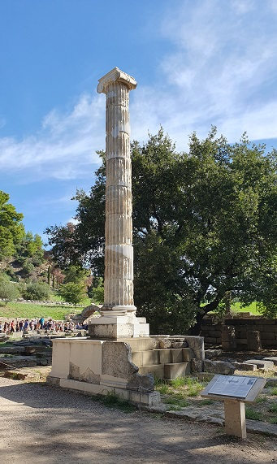
El Estadio
Olímpico.
Para los antiguos griegos, el estadio era un lugar sagrado, donde se
realizaban las actividades deportivas dedicadas al dios Zeus.
Originalmente, el estadio se encontraba dentro del témenos, y los
espectadores podían seguir las carreras desde las laderas del monte
Cronos. Su ubicación se fue trasladando paulatinamente hacia el este
hasta que llegó a su actual situación a principios del siglo V a.e.c. El
estadio está comunicado con el santuario por un pasaje con bóveda de
piedra.
No se conoce con exactitud la fecha en que se construyó el estadio. Lo
que si se ha podido determinar, es que al menos hubo otros dos
anteriormente que ocupaban el mismo lugar.
La pista de carreras mide 212,54 m (697,3 pies) de largo y 28,5 m (94
pies) de ancho, medidas de las que precisamente deriva el término
estadio. A día de hoy, está rodeada por bancales de hierba, aunque en la
antigüedad los asientos estaban hechos de barro.
En el lateral sur de la pista, se encuentran los restos de la plataforma
de piedra donde se sentaban los jueces, mientras en el opuesto, aún
sobrevive la base del altar donde se alzaba una estatua de Deméter,
diosa griega de la agricultura. Con una capacidad que podía albergar a
50.000 espectadores.
Los Juegos se celebraron entre el 776 a.e.c. y el 393, cuando el
emperador romano Teodosio I prohibió todo acto pagano y cualquier tipo
de actividad en los santuarios.
|
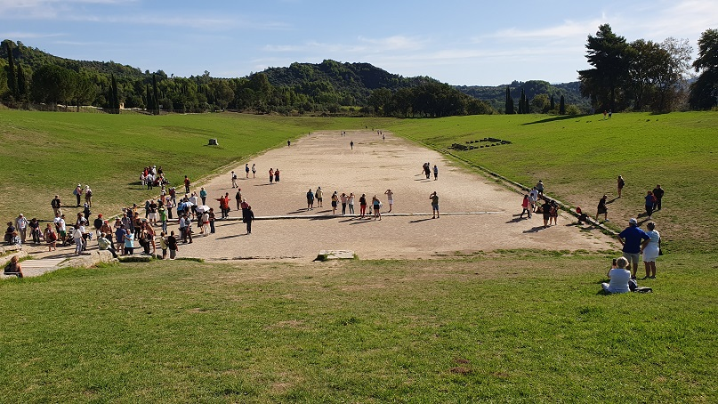 |
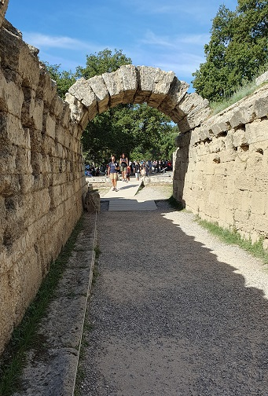 |
El Edificio Prehistórico data del 2150-2000 a.e.c, en 1908 descubrieron una serie de edificios o casas apsidales con los cimientos de piedra. En la apsidal House II, es visible actualmente, en ella se encontraron muchos hallazgos, como los jarrones con motivos decorativos incisos extranjeros que mostraban una conexión con la cultura Cetina de la costa dálmata.
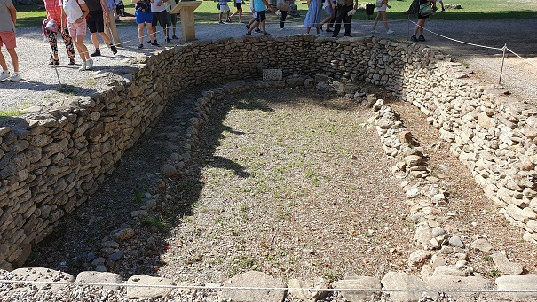
Ninfeo de
Herodes Atico. Este Ninfeo o Exedra, una fuente monumental de agua
fresca, fue financiado y mandado construir hacia el año 153 por Herodes
Ático, en honor de su esposa Regila. Para solucionar los problemas del
suministro de agua, sobre todo durante el verano cuando se celebraban
los Juego Olímpicos, se construyó este ninfeo que era la parte final de
un acueducto que conducía el agua desde una fuente situada al este.
El conjunto 34 m de ancho por 17 de altura. Los cimientos y estructuras
básicas estaban fabricados de ladrillos recubiertos de mármol.
Los nichos del edificio semicircular de dos pisos estaban adornados con
estatuas de Herodes Attico, de los emperadores Antonino Pío, Adriano,
Marco Aurelio y miembros de sus familias.

El encendido de la antorcha
olímpica. En un pequeño Altar situado en el frontal este del
templo de Hera, cada cuatro años, tiene lugar una de las ceremonias de
mayor simbolismo para el deporte, el encendido de la antorcha olímpica.
La tradición se remonta al año 1936 con motivo de la celebración de los
Juego Olímpicos de Berlín, cuando de esta manera, celebrando un ritual
donde se disputaban las olimpiadas originarias, se estableció un vínculo
entre los Juegos de la Antigua Grecia y los Juegos Olímpicos de la era
moderna.
La Suma
Sacerdotisa de la Diosa Hera, accedía durante la ceremonia al interior
del templo para invocar al dios Apolo, pedirle silencio y que los cielos
se mantengan despejados para que la llama se pueda encender.
Ella, es la responsable de sujetar la antorcha en la pila hasta que la
llama se enciende, mientras otra sacerdotisa, conocida como Estiada,
recibe la llama en una ánfora para proseguir con el desfile hasta el
cercano estadio de Olimpia.
Una vez en el estadio el ritual continua, donde tienen lugar diversas
danzas solmenes, entregando posteriormente la antorcha encendida a una
antigua olimpista, que es elegida entre aquéllas medallistas de oro de
la edición anterior. Ésta la llevará en una mano, mientras en la otra
sujeta una rama de olivo.
Al abandonar el recinto sagrado, se libera una paloma como símbolo de la
paz, momento en que la antorcha es entregada al primer relevista y
después, sucesivamente de uno a otro.
De esta manera, el fuego olímpico recorrerá el mundo hasta la sede donde
se disputarán las Olimpiadas, cuya llama, prenderá el pebetero dando
comienzo de esta manera a una nueva edición.
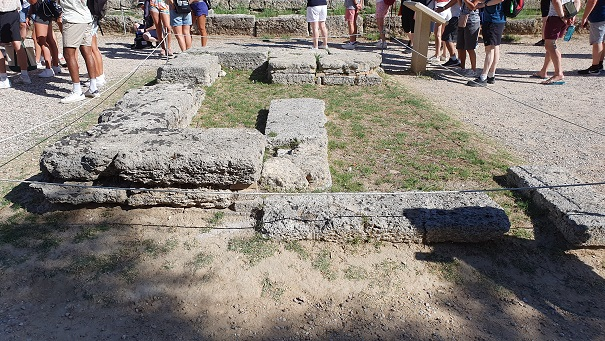
El
Templo de Hera o Hereo es un templo griego arcaico construido
alrededor del año 590 a.e.c. Situado en la zona norte, la más sagrada,
del Altis. Uno de los templos dóricos más antiguos de Grecia. Templo
períptero. Tenía una longitud de 50 m por 18,75 m. de ancho y una altura
de 7,80 m aproximadamente.
Era del lugar donde cada cuatro años se prendia la antorcha olímpica
para después, recorrer el mundo hasta llegar a la sede de una nueva
edición de las olimpiadas.
Se cree que las columnas originales de madera de encina fueron
sustituidas gradualmente por columnas de piedra a medida que se
deterioraban.
Según la leyenda, aquí se guardó el disco de la Tregua Sagrada. En la
época romana la estatua de Hermes hecha por el escultor Praxiteles fue
colocada en la celda.
Fue destruido a principios del siglo IV por un terremoto, pero el altar
dedicado a la diosa frente al templo se siguió utilizando para el
encendido de la llama olímpica.
|
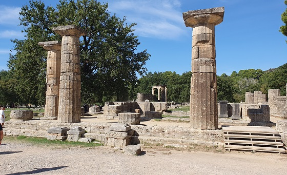 |
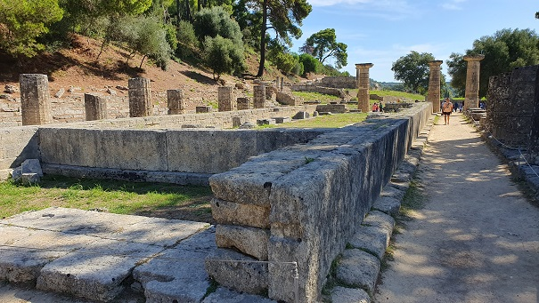 |
Philippeion.
El Filipeo era un edificio dentro del Altis de Olimpia. Era un monumento
circular de orden jónico de barro cocido con columnas a su alrededor.
Es la única estructura arquitectónica del Altis dedicada a humanos.
Fue erigido por Filipo II en orden jónico tras la batalla de los
Querones en el año 338 a.e.c. De él subsisten el basamento, tres
columnas completas y parte del arquitrabe.
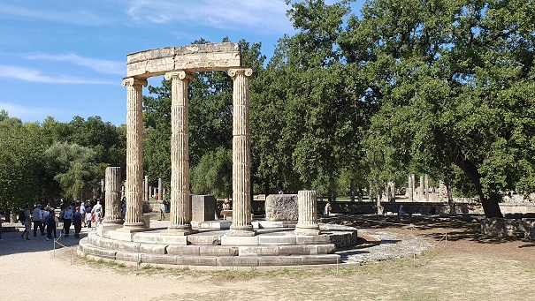
El Prytaneion es un edificio rectangular restaurado en varias ocasiones data del siglo V a.e.c. Era la sede de los dignatarios del santuario ("prytaneis"), responsables de los sacrificios realizados en los altares. En el interior del edificio también se encontraba el hogar de la diosa Hestia, donde se encendió la llama sagrada y eterna. Aquí se festejaron los invitados de honor y los visitantes de los Juegos Olímpicos. El pritaneo original lo constituía un cuadrado de 32,80 m. El lugar donde estaba el altar de Hestia fue una habitación cuadrada de 6,5 m de lado.
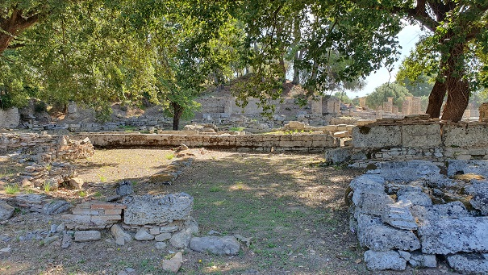
Kronion Thermae es un complejo de edificios destinados al baño datados entre los siglos II a.e.c. y V. Sobre el patio central y los baños de la época helenística, se construyeron en la era romana unas salas con impresionantes mosaicos. Fue destruida por un terremoto al final del siglo III. La última reparación se remonta al siglo V. Durante ese período funcionó como lugar de actividades agrícolas.
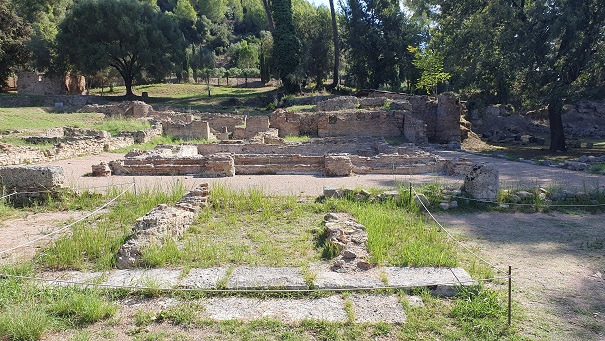
Museo Arqueológico de Olimpia
|
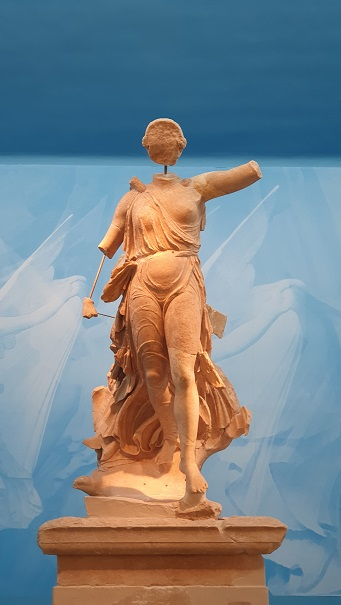 |
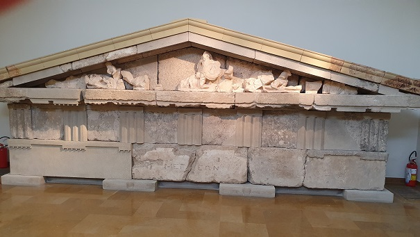 |
| IMPERIO ROMANO | MENÚ | GRECIA |